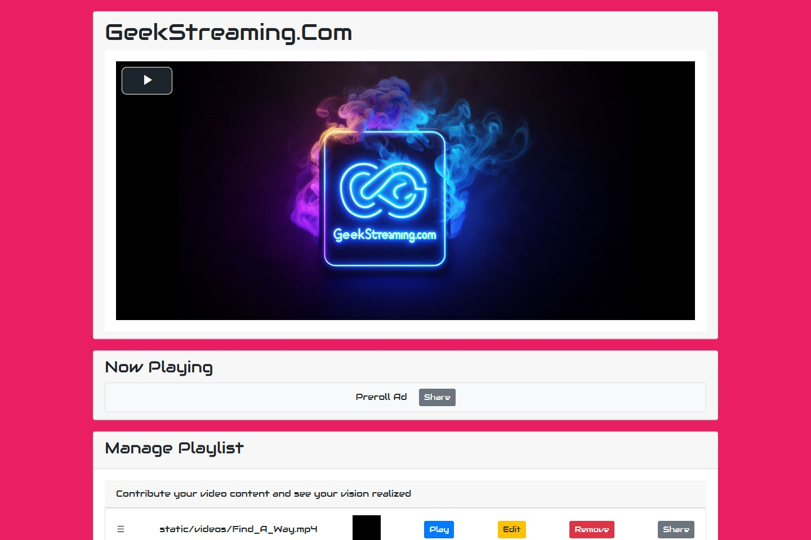
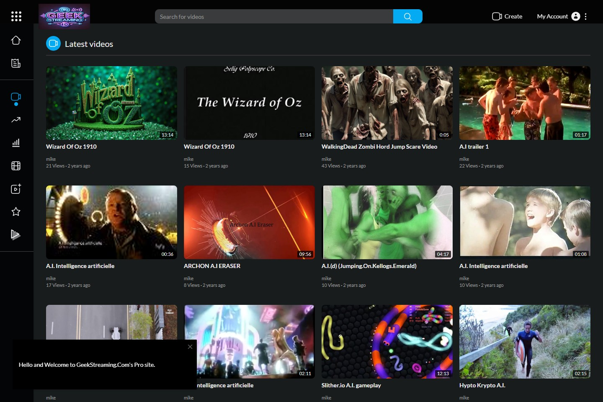

YOUR IDEAS. YOUR EDIT. YOUR WORKSTATION.
Your stories,
in motion.
From a blank page to the final frame.
Write, plan, generate and edit in one local video studio — with AI when you want it, and creative control throughout.
An actual ScriptStudio workspace. Local AI footage, narration, music and sound effects, together on the timeline.
SCRIPT → STORYBOARD → TIMELINE → FILMLOCAL AIEDITABLE TAKESMP4 + CAPTIONSOPENSHOT HANDOFF
THE VIDEO SHOWCASE
See the stories
in motion.
Explore five new AI-generated videos. Choose a clip and press play to watch it with sound, or expand it to full screen.
ONE CONNECTED WORKFLOW
A little less juggling.
A lot more creating.
Give your ideas a place to become explainers, product stories, narrated tutorials and short videos. Keep the script, the media and the edit together.
Start with the words
Write manually or use AI assistance. Review your script and shot plan before production.
Stay in the edit
Combine generated clips with imported footage, images and audio. Shape the result on a layered timeline.
Take your work further
Export a video with captions, or continue the visual edit in OpenShot with a bundled project and media.
FROM FIRST WORD TO FINAL FRAME
Meet your new
creative routine.
See the real interface at every step.
Select any screenshot for a closer look.
01 / WRITE
Start with a story.
Write your own narration or draft with local Ollama. Review the words before accepting them, and add bracketed visual directions to guide your footage.
01 / 0602 / PLAN
Give every scene a direction.
Turn a script into scenes and shots. Review visual prompts and regenerate a shot when you want another take.
02 / 0603 / CREATE
Bring words, pictures and sound together.
Build a project with narration, generated video, music and sound effects. Preview your work alongside a timeline with dedicated tracks.
03 / 0604 / REFINE
Make the edit yours.
Move, trim, split and duplicate clips. Adjust supported fades, volume and transforms, choose takes, and use saved undo and redo.
04 / 0605 / FOLLOW ALONG
See what your studio is doing.
Follow each job through preparation, generation, saving and validation. Preview ready clips and place them on your timeline.
05 / 0606 / SHARE
Your next stop: the finished film.
Render a final MP4, download SRT or WebVTT captions, or take the project and its media into desktop OpenShot.
06 / 06AN AI TOOLKIT ON YOUR WORKSTATION
Local tools.
Room to experiment.
Install supported media models from inside the native Windows app. Use local generation without per-generation API charges, with separate tools for each part of your production.
Kokoro
Turn narration into speech.
Wan 2.1
Generate video from visual prompts.
ACE-Step
Create a soundtrack for your story.
Stable Audio
Describe the sounds your scene needs.
Model downloads, compatible hardware and each model’s license/access conditions apply. Stable Audio requires access approval. Generation speed depends on your hardware and settings; video generation can take hours. Local Ollama writing and planning uses a separate installation.
LOOK A LITTLE CLOSER
A workspace
with the details covered.
Real screenshots, captured from the running Windows application. Click to enlarge.
Your media, in one place
Import footage, images and audio, preview assets, and add them to your edit.
Set the direction
Choose project format, provider settings and production preferences.
A brighter way to work
Switch between dark and light themes to suit your workspace.
GOOD TO KNOW
A studio that fits your setup.
How do I run ScriptStudio?
Download and run ScriptStudio-Setup.exe for Windows 11 x64. The setup wizard checks your hardware, shows required space, and installs only after you accept. Core setup requires 4 logical CPU cores and 8 GiB RAM, plus the reported installation space and a 10 GiB project reserve. The installer bundles its core services and works offline for core-only installation; no separate Docker, WSL2, Python or Node installation is needed. This unsigned preview passed isolated Windows 11 core tests. Optional AI model downloads and generation remain unverified. Review Windows security prompts manually where permitted; keep security controls enabled. See the release notes and SHA-256 checksum before installing.
Can I try the workflow without AI credentials?
Yes. The built-in mock demo uses synthesized speech, clearly labeled synthetic footage and instrumental audio. It lets you explore the workflow without paid credentials. The separate local AI demo uses installed models and queues a final export after generation finishes.
Is everything local?
The app stores its projects and generated media on your workstation. Local-model workflows run locally; model installation requires downloads. Optional paid providers send requests to their external services when configured and enabled.
Can I use my own media and keep editing?
Import video, audio and PNG/JPEG images, then place them on the timeline. Export MP4, SRT or WebVTT captions, or an OpenShot project bundle. OpenShot handoff is one-way; edits there do not automatically return to ScriptStudio.
What about commercial use and paid AI?
ScriptStudio’s source is GPL-licensed. Models and providers have their own licenses, access rules and commercial-use conditions. Optional paid generation requires supported providers, credentials, enabled permissions and project budgets. Review the repository’s license and notices alongside your chosen model’s terms.
YOUR NEXT STORY STARTS HERE
Bring an idea.
Make it a film.
Download the single Windows 11 installer, review your hardware and installation choices, then accept and build your first project. Windows 11 x64 · 573 MB · unsigned core-tested preview. Optional AI models require additional downloads and remain unverified.
CREATE IN SCRIPTSTUDIO. SHARE YOUR STORY.
Share the videos
you create here.
Bring your finished videos to GeekStreaming and ProTube. Explore each site and find a new home for your next story.
geekstreaming.com

GEEKSTREAMING
Your videos. Ready to stream.
Share the videos you create here. Explore GeekStreaming’s video player and playlists, and bring your creations to the screen.
Visit GeekStreamingprotube.geekstreaming.com

PROTUBE
Give your next story an audience.
Share the videos you create here. Discover ProTube’s video community and put your next creation alongside stories from other creators.
Visit ProTube